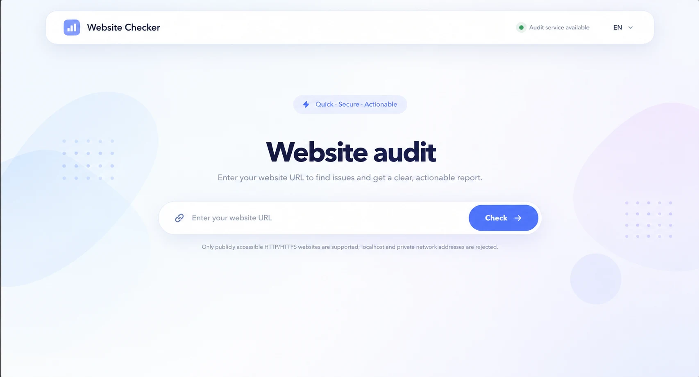

Website quality · Business operations · 2026
AI Website QA
& Operations
An AI reviewer that checks websites in the background before launch. A person only reviews the finished reports instead of checking every site by hand.Scale Runs on one entry-level Mac mini · 3 sites in parallel · API-triggered by the internal systemRole Core research team member · built the skills and integrations
Websites reviewed per 30 minutes, on the lowest-spec Mac mini M4 (16 GB RAM, 256 GB storage).

Explore the project
What is OpenClaw?
OpenClaw is an AI agent platform. It follows written instructions (“skills”) and uses tools such as a web browser to complete tasks on its own.
The problem
Before every launch, a person had to open each website and repeat the same checks by hand: wording, layout, mobile responsiveness and business information. It was slow, and the quality of the check depended on who did it and how tired they were.
My role
Member of the company’s early core OpenClaw research team. I wrote the review skills, set up the browser automation and connected the workflow to the internal system through its API.
How it works
- Request: the internal system sends a website to review through an API call.
- Queue: reviews run in the background, up to 3 at a time on one Mac mini, so nobody waits at a screen.
- AI review: an OpenClaw agent follows the team’s checklist in a real browser. It checks copy, layout, responsiveness and business information. One report takes about 10 to 12 minutes.
- Report: findings return to the internal system.
- Human decision: a reviewer reads the report and makes the final call.
What I built
- Turned the team’s pre-launch checklist into custom OpenClaw skills that the agent follows on every site.
- Set up browser automation to check copy, layout, responsiveness and business information.
- Integrated the workflow with the internal system through its API, so reviews run automatically in the background.
- Also connected OpenClaw to internal APIs for website backend tasks such as uploading products and services.
- Kept API tokens out of prompts, skills and outputs, so credentials are never exposed.
Why a human stays in the loop
The AI does the repetitive checking. A person stays as the reviewer and approves the result. This keeps accountability with people, and cuts the time spent opening and checking each website one by one.
Result
Review throughput rose from 1 website to 6 in 30 minutes (6×, a +500% increase). That comes from 3 parallel workers, each finishing a report in about 10 to 12 minutes, on the lowest-spec Mac mini M4. Reviewers now check finished reports instead of every website. This figure applies specifically to website QA.
Tech in context
OpenClaw with custom skills holds the review rules. Browser automation performs the checks. Internal REST APIs trigger reviews and return reports. The whole setup runs on an entry-level Mac mini, so the cost to run it is low, and more machines could add capacity.